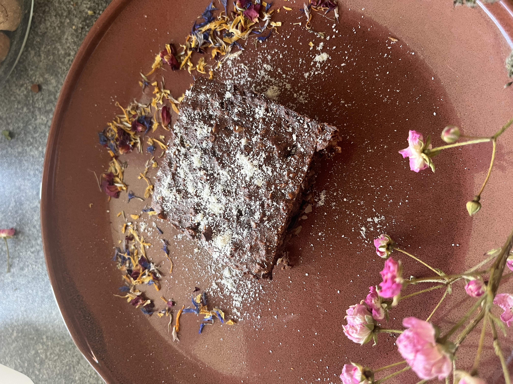

Mousse, Eis oder Kuchen — ein Grundrezept.
Zum Rezept →
Kleine Ofen-Häufchen mit Sprossenmehl.
Zum Rezept →
Dessert-Klassiker in der histaminarmen Variante.
Bald →
Aus dem 3-in-1-Grundteig — als Eis am Stiel.
Zum Rezept →
Rezept folgt in Kürze.
Bald →
Eine Mango, Kokosmilch, Wasser — cremig in fünf Minuten.
Zum Rezept →
Quark-Teig mit Vanillepudding-Füllung — ohne Hefe, einfrierbar.
Zum Rezept →
Saftig, mit Quark-Grundteig. Histaminarm.
Zum Rezept →
Mit Vanillesoße. Gleicher Grundteig wie beim Karottenkuchen.
Zum Rezept →